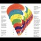

<html lang="en">
 <head>
<!-- Favicon -->
<link rel="shortcut icon" href="../../favicon.ico">
  <meta charset="utf-8"/>
  <title>
   What is Spiral Dynamics and Why Have I Become So Interested in It?
  </title>
  <meta content="Post on /v/Conspiracy from 2017-02-28 by salvia_d." name="description"/>
  <meta content="What is Spiral Dynamics and Why Have I Become So Interested in It?" property="og:title"/>
  <meta content="Post on /v/Conspiracy from 2017-02-28 by salvia_d." property="og:description"/>
  <link href="../../static/css/page.css" rel="stylesheet"/>
  <meta content="https://voat.conspiracy.hackliberty.org/thumbnails/e7/cd/e7cd2643-5034-443f-8f3c-ba4eb9511971.jpg" property="og:image"/>
  <meta content="https://voat.conspiracy.hackliberty.org/v/conspiracy/1684029.html" property="og:url"/>
  <meta content="width=device-width, initial-scale=1" name="viewport"/>
  <link href="https://voat.conspiracy.hackliberty.org/v/conspiracy/1684029.html" rel="canonical"/>
  <meta content="article" property="og:type"/>
  <meta content="Voat /v/Conspiracy Archive" property="og:site_name"/>
  <meta content="en_US" property="og:locale"/>
  <meta content="summary_large_image" name="twitter:card"/>
  <meta content="What is Spiral Dynamics and Why Have I Become So Interested in It?" name="twitter:title"/>
  <meta content="Post on /v/Conspiracy from 2017-02-28 by salvia_d." name="twitter:description"/>
  <meta content="https://voat.conspiracy.hackliberty.org/thumbnails/e7/cd/e7cd2643-5034-443f-8f3c-ba4eb9511971.jpg" name="twitter:image"/>
 </head>
</html>
<body class="dark">
 <div id="container">
  <!-- array (
  'submissionid' => 1684029,
  'creationDate' => '2017-02-28 19:45:08',
  'domain' => 'libertyblitzkrieg.com',
  'formattedContent' => NULL,
  'isAdult' => 0,
  'isAnonymized' => 0,
  'subverse' => 'Conspiracy',
  'thumbnail' => 'e7cd2643-5034-443f-8f3c-ba4eb9511971.jpg',
  'title' => 'What is Spiral Dynamics and Why Have I Become So Interested in It?',
  'url' => 'https://libertyblitzkrieg.com/2017/02/07/what-is-spiral-dynamics-and-why-have-i-become-so-interested-in-it/',
  'userName' => 'salvia_d',
  'archivedLink' => NULL,
  'archivedDomain' => NULL,
  'isDeleted' => 0,
) -->
  <div style="text-align:center; font-size:24px; font-weight:bold;">
   <a href="../../index.html" style="text-decoration: none; color: inherit;">
    Voat /v/Conspiracy Archive
   </a>
  </div>
  <div class="content" role="main">
   <div class="sitetable linklisting" id="siteTable">
    <div class="submission id-1684029 link type-text" id="submission-1684029">
     <a name="submissionTop">
     </a>
     <p class="parent">
     </p>
     <a class="thumbnail may-blank" href="https://libertyblitzkrieg.com/2017/02/07/what-is-spiral-dynamics-and-why-have-i-become-so-interested-in-it/" target="_self">
      
     </a>
     <div class="entry unvoted">
      <p class="title">
       <a class="title may-blank" href="https://libertyblitzkrieg.com/2017/02/07/what-is-spiral-dynamics-and-why-have-i-become-so-interested-in-it/" tabindex="1" target="_self" title="What is Spiral Dynamics and Why Have I Become So Interested in It?">
        What is Spiral Dynamics and Why Have I Become So Interested in It?
       </a>
       <span class="domain">
        (
        <a href="https://archive.searchvoat.co/search.php?d=libertyblitzkrieg.com">
         libertyblitzkrieg.com
        </a>
        )
       </span>
      </p>
      <p class="tagline">
       submitted
       <time datetime="2017-02-28T19:45:08+00:00" title="02/28/2017 7:45:08 PM">
        2017-02-28T19:45
       </time>
       by
       <span class="userattrs">
        <a class="author may-blank" href="https://archive.searchvoat.co/search.php?u=salvia_d">
         salvia_d
        </a>
       </span>
      </p>
      <ul class="flat-list buttons">
       <li class="first">
        <a class="comments may-blank" href="https://archive.searchvoat.co/v/Conspiracy/1684029" rel="nofollow">
         No comments
        </a>
       </li>
      </ul>
     </div>
     <div class="child">
     </div>
     <div class="clearleft">
     </div>
    </div>
    <div class="clearleft">
    </div>
   </div>
   <div class="horizontal-line">
   </div>
   <div class="commentarea">
    <div class="sitetable nestedlisting" id="siteTable">
    </div>
   </div>
  </div>
 </div>
<!-- Footer Section -->
<footer class="container-fluid mt-3">
  <p class="small mb-0">
    /v/conspiracy archive has 42504 posts and 159856 total comments.
    <a href="https://git.hackliberty.org/c0mmando/voat-conspiracy-archive/">source code</a>.
  </p>
</footer>

<script src="../../static/js/jquery-3.7.1.slim.min.js"></script>
<script src="../../static/js/comments-toggle.js"></script>

</body>
